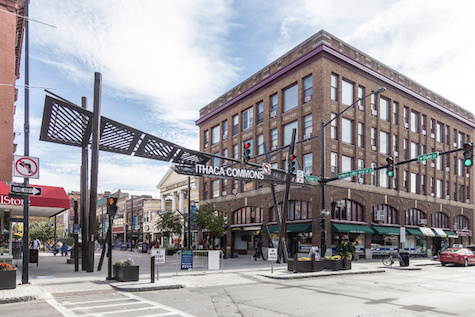

Location
The Apple Harvest Festival will be located in the heart of downtown Ithaca at the Ithaca Commons
- Address
- 171 E M.L.K. Jr. St, Ithaca, NY 14850
Information sourced from Google Maps: Ithaca Commons

Event Map
Click here to download the map!